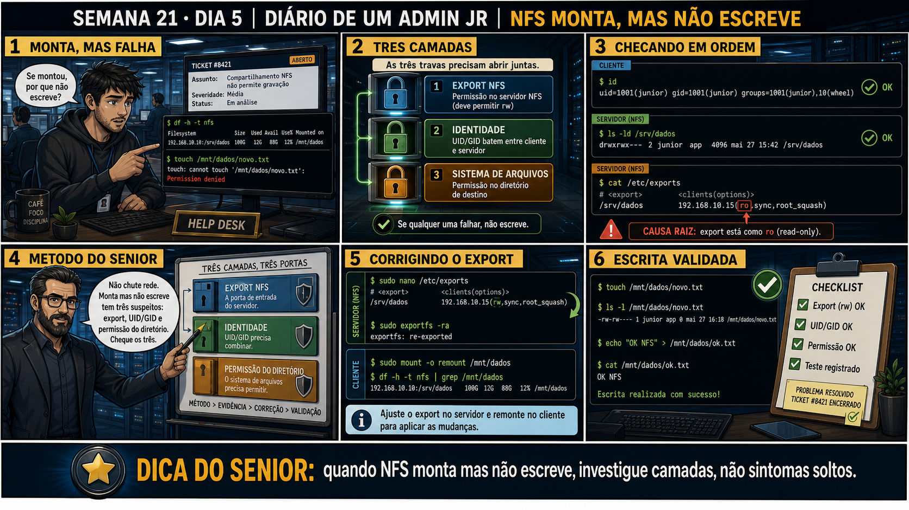

Diagnóstico: Escrita Falha no NFS
uma escrita negada é sempre a soma de várias camadas — cada uma pode ser a culpada
ANTES DE ALTERAR, OBSERVE. DEPOIS DE ALTERAR, VALIDE.
1. O chamado
💡 Passa o mouse nas palavras destacadas pra ver uma dica rápida — clica se quiser a explicação completa com analogia.
2. Antes de ver as opções — tenta responder
3. Questão comentada — clica numa alternativa
4. Decodificador de conceitos
Clica em qualquer termo pra ver a definição completa e uma analogia do dia a dia:
5. Ferramentas e leitura da evidência
| Camada | Como testar |
|---|---|
| Rede | ping/showmount confirmam alcance básico ao servidor. |
| Export (NFS) | exportfs -v confirma rw vs ro. |
| Permissão Unix | ls -ld no diretório do servidor confirma permissão real do sistema de arquivos. |
| UID/GID | id nos dois lados confirma se o usuário bate (Dia 3). |
--- diagnóstico completo do chamado #2105 ---
$ showmount -e 10.10.10.50
Export list for 10.10.10.50:
/dados/uploads 10.10.10.21 ← rede/export básico: OK
$ exportfs -v
/dados/uploads 10.10.10.21(rw,sync,no_subtree_check) ← rw confirmado: OK
$ id joao # no cliente
uid=2001(joao) gid=2001(joao)
$ id joao # no servidor
uid=2001(joao) gid=2001(joao) ← UID batendo: OK
--- causa raiz encontrada ---
$ ls -ld /dados/uploads # no servidor
drwxr-xr-x 2 root root 4096 Sep 1 10:00 /dados/uploads
← só root tem escrita (w), joao não
--- correção ---
$ chown joao:joao /dados/uploads
$ ls -ld /dados/uploads
drwxr-xr-x 2 joao joao 4096 Sep 1 14:20 /dados/uploads
← agora joao tem escrita
5.1 O painel 4 da prancha de hoje mostra o sênior insistindo que export rw e permissão Unix de escrita são DUAS permissões diferentes, não uma só
Um colega acha que, uma vez o export estando rw, a permissão Unix do diretório se torna irrelevante.
5.2 "Se root não consegue escrever, mais ninguém consegue?"
Um colega testa como root no cliente, vê que a escrita também falha, e conclui que o problema é generalizado pra qualquer usuário.
6. Procedimento profissional
- Confirme rede/export básico funcionando com showmount -e.
- Confirme a opção rw no export com exportfs -v.
- Confirme a permissão Unix tradicional do diretório no servidor com ls -ld.
- Confirme UID/GID batendo entre cliente e servidor com id.
- Teste sempre com o usuário real do chamado, não com root — root squash distorce o resultado.
7. Laboratório guiado — marca conforme for testando
- CENÁRIOAção: Prepare o pacote e o usuário de teste — o ponto da aula é a permissão Unix do DIRETÓRIO, que você mesmo vai criar e quebrar de propósito no passo 1.sudo apt install -y nfs-kernel-server nfs-common sudo useradd -u 5001 -m joao 2>/dev/null || echo "usuario joao ja existe" sudo mkdir -p /mnt/uploads id joao
🔍 Detalhar esse comando
- useradd
- Cria uma nova conta de usuário no sistema.
- -u 5001
- Define explicitamente o UID — não deixa o sistema escolher automaticamente, pois o teste depende desse número específico bater (ou não) com o do lado do servidor NFS.
- -m
- Cria também o diretório home do usuário.
- 2>/dev/null || echo "..."
- Se o comando falhar (usuário já existe de um teste anterior), descarta o erro técnico e mostra uma mensagem clara em vez de travar o laboratório.
Resultado esperado:id joaomostrauid=5001(joao)— o usuário de teste está pronto, mesmo que o diretório de export ainda não exista (você cria no passo 1).Por que fizemos isso: ter o usuário de teste já pronto deixa você focado exatamente no que hoje ensina: a diferença entre permissão de export (NFS) e permissão Unix do sistema de arquivos.Cilada comum: só em VM descartável — e se você já rodou o laboratório do Dia 3 nesta mesma VM, o useradd vai avisar que joao já existe; tudo bem, é o mesmo usuário. - Numa VM servidor de laboratório, crie um diretório de export com dono root e permissão 755 (sem escrita pra outros).Resultado esperado: diretório criado, export configurado com rw.
- Do cliente, monte o export e tente criar um arquivo como um usuário comum (não root).Resultado esperado: Permission denied, mesmo com export rw.🧑🏫 Aqui entra o Mentor (em breve): se você não souber diferenciar o erro de permissão NFS do erro de permissão Unix pela mensagem, este é o ponto onde o chat com o Sênior-IA vai te ajudar a interpretar.
- No servidor, corrija a permissão do diretório com chown pro usuário/grupo correto.Resultado esperado: escrita funcionando agora do cliente.
- Teste como root no cliente também, e compare o resultado com o teste do usuário comum.Resultado esperado: comportamento diferente entre root (afetado por root squash) e o usuário comum já corrigido.
- CENÁRIOAção: Desmonte, remova export, usuário e diretórios de teste — fecha a Semana 21 sem deixar rastro na VM.sudo umount /mnt/uploads sudo sed -i '/uploads/d' /etc/exports sudo exportfs -ra sudo userdel -r joao sudo rm -rf /dados/uploads /mnt/uploadsResultado esperado:
id joaoretorna "no such user", eexportfs -vnão lista mais /dados/uploads.Por que fizemos isso: fecha a semana com a mesma disciplina do Dia 1: todo usuário, export e diretório tocados nesses cinco dias foram criados por você, pro seu próprio aprendizado, e saem exatamente como entraram.Cilada comum: rodar userdel antes do umount pode deixar o ponto de montagem preso a um usuário que já não existe mais — sempre desmonte primeiro.Se o seu resultado foi diferente
"umount: /mnt/uploads: not mounted" → normal se seu teste específico não chegou a montar — ignore e siga pra remoção do usuário e do export.
8. Validação e encerramento
- Leitura funcionando e escrita falhando aponta especificamente pra uma camada de permissão de escrita.
- Export rw e permissão Unix do diretório são camadas independentes — as duas precisam estar corretas.
- UID/GID batendo é pré-requisito, mas não garante sozinho que a permissão Unix do diretório permite escrita.
- Testar como root pode enganar o diagnóstico por causa do root squash — sempre teste com o usuário real.
Rollback e limites
9. Resposta final
🏁 Semana 21 concluída — NFS, do conceito ao diagnóstico em camadas
Você fechou cinco dias que levaram você de "o que é montar um diretório remoto" até diagnosticar uma escrita negada cruzando quatro camadas diferentes de permissão. No caminho: o modelo cliente-servidor do NFS, exports seguros com rede e permissão controladas, o motivo real do UID/GID precisar bater entre máquinas, montagem persistente sem arriscar o boot, e o diagnóstico completo em camadas.
Amanhã começa a Semana 22: Samba — compartilhamento de arquivos pro mundo Windows, usando o mesmo rigor de permissões que você acabou de dominar com NFS, agora com uma camada extra de autenticação própria.